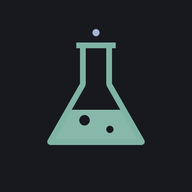

D3cSnow
温修群 · NTU 醫學系
medical imaging AI · computer vision
Apps

Elixir
115-1 daily study system — 間隔複習、每日測驗、學期路線圖
→
Elixir 的資料存在你目前這台裝置的瀏覽器裡
，手機與電腦不會自動同步。
要換裝置時，用 Progress 分頁的
Export
匯出 JSON，在新裝置上
Import
匯入。